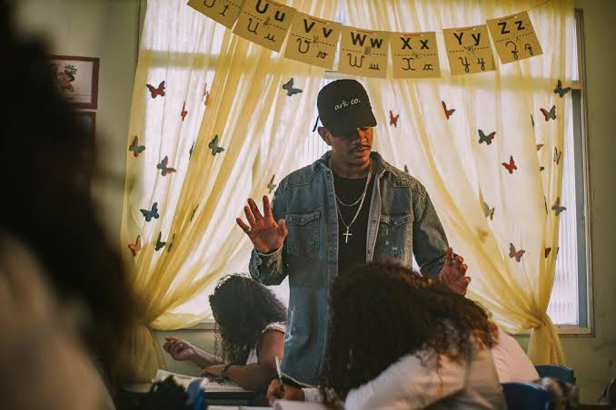

Data de lançamento: 2019
Artistas: Cesar MC, Tibery, Pineapple StormTv
Gênero: Hip Hop
A música apresenta uma crítica à realidade da sociedade, principalmente às dificuldades enfrentadas por crianças e jovens que crescem em situações de desigualdade, violência e falta de oportunidades.
O título “Canção Infantil” cria um contraste muito forte com o conteúdo da música. Quando pensamos em uma canção infantil, imaginamos algo leve, alegre e inocente. Porém, César MC utiliza essa ideia justamente para mostrar que, para muitas crianças, a realidade está muito distante dessa infância idealizada.
Ao longo da música, o artista aborda temas como violência, pobreza, desigualdade social, abandono e perda da inocência. Ele mostra como problemas presentes na sociedade acabam afetando principalmente aqueles que estão crescendo em ambientes vulneráveis.
Outro ponto importante é que a música faz uma reflexão sobre a infância. Crianças deveriam estar preocupadas em brincar, estudar e sonhar com o futuro, mas muitas acabam sendo expostas precocemente a problemas que não deveriam fazer parte dessa fase da vida.
Por isso, acredito que “Canção Infantil” não é apenas uma música, mas também uma forma de denúncia e reflexão social.. César MC utiliza o rap para chamar a atenção para problemas que muitas vezes são ignorados e para mostrar uma realidade que nem todos vivenciam ou conhecem.
Assim, a principal mensagem que podemos tirar da música é a importância de olhar para essas desigualdades e entender que toda criança deveria ter o direito de viver uma infância com segurança, educação, oportunidades e liberdade para sonhar.
César MC, nome artístico de César Augusto Sales, é um rapper, compositor e artista brasileiro, conhecido por suas músicas que abordam questões sociais, desigualdade, racismo, violência e as dificuldades enfrentadas pela população das periferias.
Ele ganhou destaque no cenário do rap nacional principalmente por sua participação em batalhas de rima, onde demonstrou seu talento para improvisação e composição. A partir dessas experiências, César MC conquistou reconhecimento e passou a desenvolver uma carreira musical marcada por letras profundas e críticas à realidade brasileira.
Um dos seus maiores destaques é a música “Canção Infantil”, lançada em parceria com Kawê, que ganhou grande repercussão por apresentar uma reflexão sobre a infância, a violência e as desigualdades sociais. A música utiliza referências de histórias e elementos da infância para contrastá-los com problemas presentes na realidade de muitas crianças brasileiras.
César MC se tornou uma importante figura do rap brasileiro justamente por utilizar sua música não apenas como entretenimento, mas também como uma maneira de contar histórias, expressar sentimentos e provocar reflexões sobre problemas sociais.
Sua trajetória representa a força da cultura hip-hop e mostra como a música pode ser utilizada como instrumento de crítica, conscientização e transformação social.
Escutei minhas referência, eu trabalho pra virar uma
Musica: Precisava Voltar Com a Folhinha
Deus escreve planos de paz, mas também nos dá a caneta
A vida é uma canção infantil, veja você mesmo
Somos Pinóquios plantando mentiras e botando a culpa no Gepeto
Musica: Canção Infantil (part. Cristal)